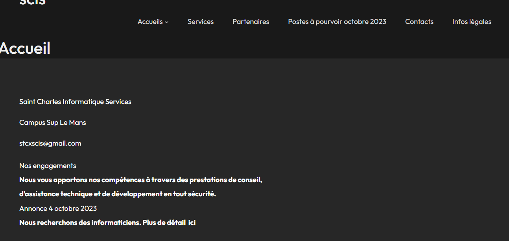
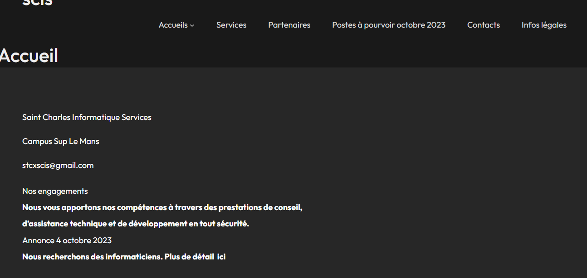

Projet Stage Sciss
Ce projet a pour objectif la création d'un site wordpress pour sciss
Projet fait en Groupe
Ce projet m'a permis de découvrir wordpress et d'apprendre à l'utiliser dans ce projet.
Ce projet à été fait en deux étape. La première étape était la conception du site grace au CMS wordpress avec plusieurs page et une page de contact.
La deuxième étape était une autre version du site wordpress fait avec par nos professeur que l'on devait corrigé, ajoutez des éléments manquants.
 

Compétences
- Gérer le patrimoine informatique
- Répondre aux incidents et aux demandes d'assistance et d'évolution